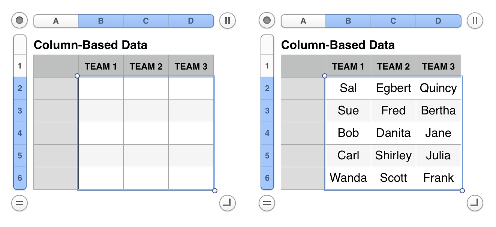
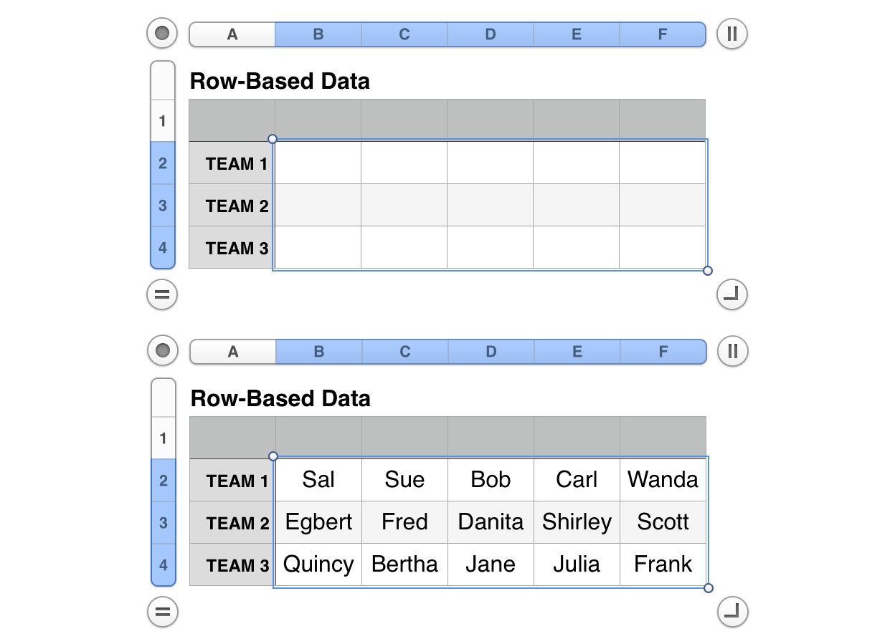

By default, Numbers for Mac and Numbers for iOS support importing the following file formats:
Numbers ’09 (2.0 or later)
Microsoft Excel - Office Open XML (.xlsx) and Office 97 or later (.xls)
Comma Separated Values (CSV)
Tab-delimited text files
But opening files is not the only way to add data to a document. Using the scripting support in Numbers 3.1, you can read data directly from files, to use in the creation of new tables, or to fill-in a selection range of an existing table.
This topic concerns how to read and use the contents of Tab Separated Values (TSV) files, like the one shown below:
For a description of how table data is represented in scripts, see Populating Tables with Data, in the previous section of this site.
Reading Data from File into Selection Range
This script will import and interpret tabbed data from a TSV file, into the selection range of an existing table. To use, select a tange of cells in a table, that matches the parameters of the data to import. For example, if the data in the file consists of three data groups of five data items, then select three rows of cells crossing five columns in the table.
The script will prompt the user to choose the source file, and then declare whether the data is to be row-oriented or column-oriented. It will also check that the data and selection range attributes match.

(⬆ see above ) Data imported into selection range as column-based data. (⬇ see below ) Data imported into selection range as row-based data.

DEMO CONTENT: The tables contained in the Selection Import Example Numbers file, are designed to use the example data file, linked in the first segment at the top of this page.
Write Data from TSV File into Table Selection
01
tellapplication "Numbers"
02
activate
03
try
04
if not (existsdocument 1) then error number 1000
05
telldocument 1
06
try
07
tellactive sheet
08
set theselectedTableto ¬
09
(the firsttablewhoseclassofselection rangeisrange)
10
end tell
11
on error
12
errornumber 1001
13
end try
14
tellselectedTable
15
-- determine the attributes of the selection range
16
set theselectionRowCounttocountofrowsofselection range
17
set theselectionColumnCounttocountofcolumnsofselection range
18
set theselectedCellNamesto thenameof everycellof theselection range
19
set theselectedCellCountto thelengthof theselectedCellNames
20
21
-- prompt user for the TSV file to read
22
setthisTSVFileto ¬
23
(choose fileof type "public.tab-separated-values-text" with prompt ¬
24
"Pick the TSV (tab separated values) file to import:")
Mention of third-party websites and products is for informational purposes only and constitutes neither an endorsement nor a recommendation. MACOSXAUTOMATION.COM assumes no responsibility with regard to the selection, performance or use of information or products found at third-party websites. MACOSXAUTOMATION.COM provides this only as a convenience to our users. MACOSXAUTOMATION.COM has not tested the information found on these sites and makes no representations regarding its accuracy or reliability. There are risks inherent in the use of any information or products found on the Internet, and MACOSXAUTOMATION.COM assumes no responsibility in this regard. Please understand that a third-party site is independent from MACOSXAUTOMATION.COM and that MACOSXAUTOMATION.COM has no control over the content on that website. Please contact the vendor for additional information.